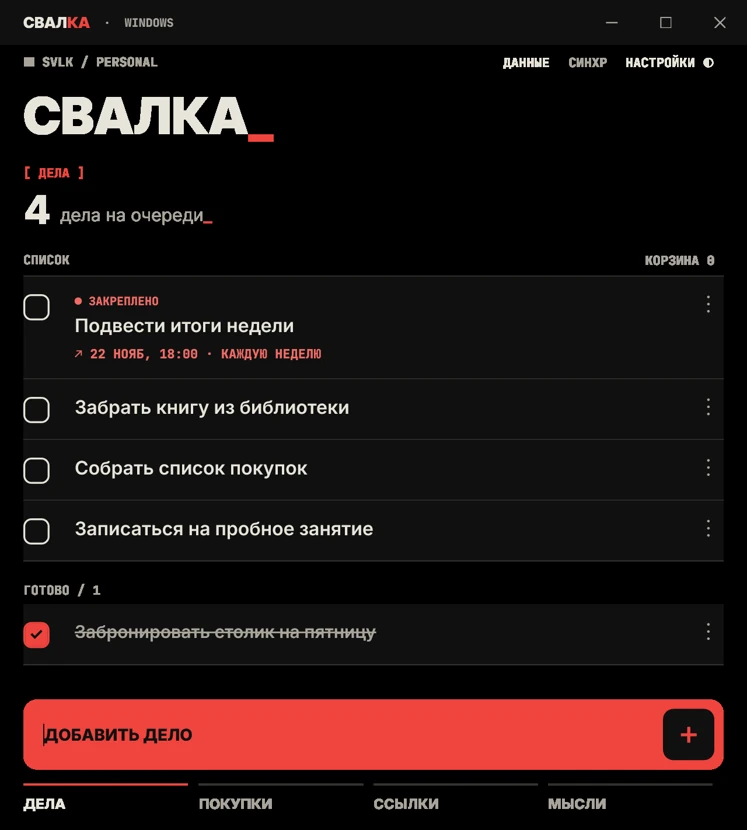

Android
Версия 2.1
Скачать APKСВАЛКА · Android 7+ и Windows 10/11
Дела, покупки, ссылки и мысли в отдельных списках. Для дел можно задать напоминание. Списки хранятся на устройстве.

Версия 2.1
Скачать APKВерсия 0.4.2
Скачать EXEОткройте «Дела», «Покупки», «Ссылки» или «Мысли».
Добавьте запись. Для дела можно поставить одноразовое или повторяющееся напоминание.
Телефон и компьютер могут использовать общий список через ваш сервер.
